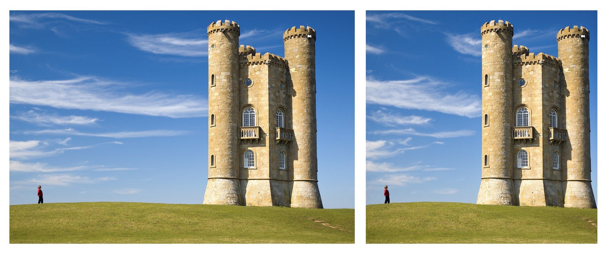
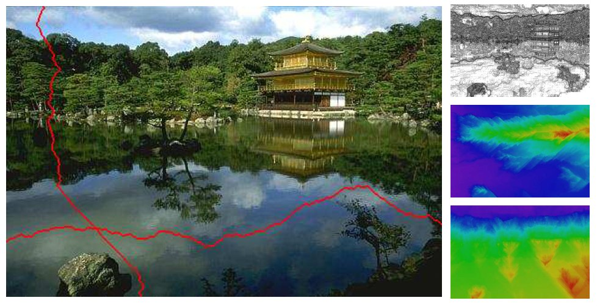
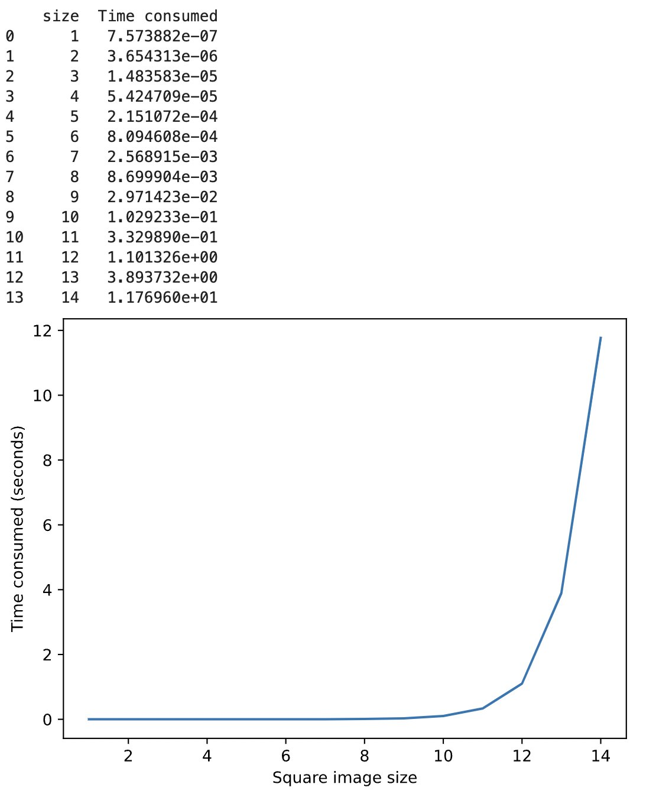
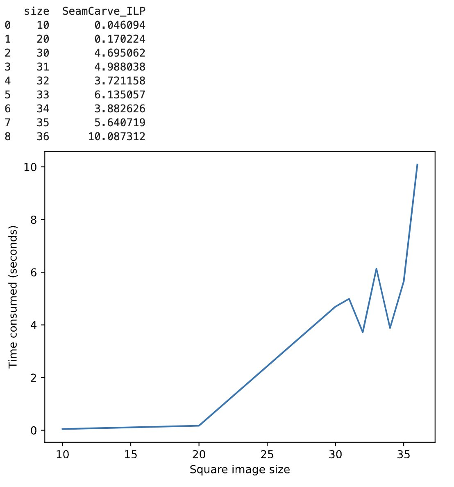
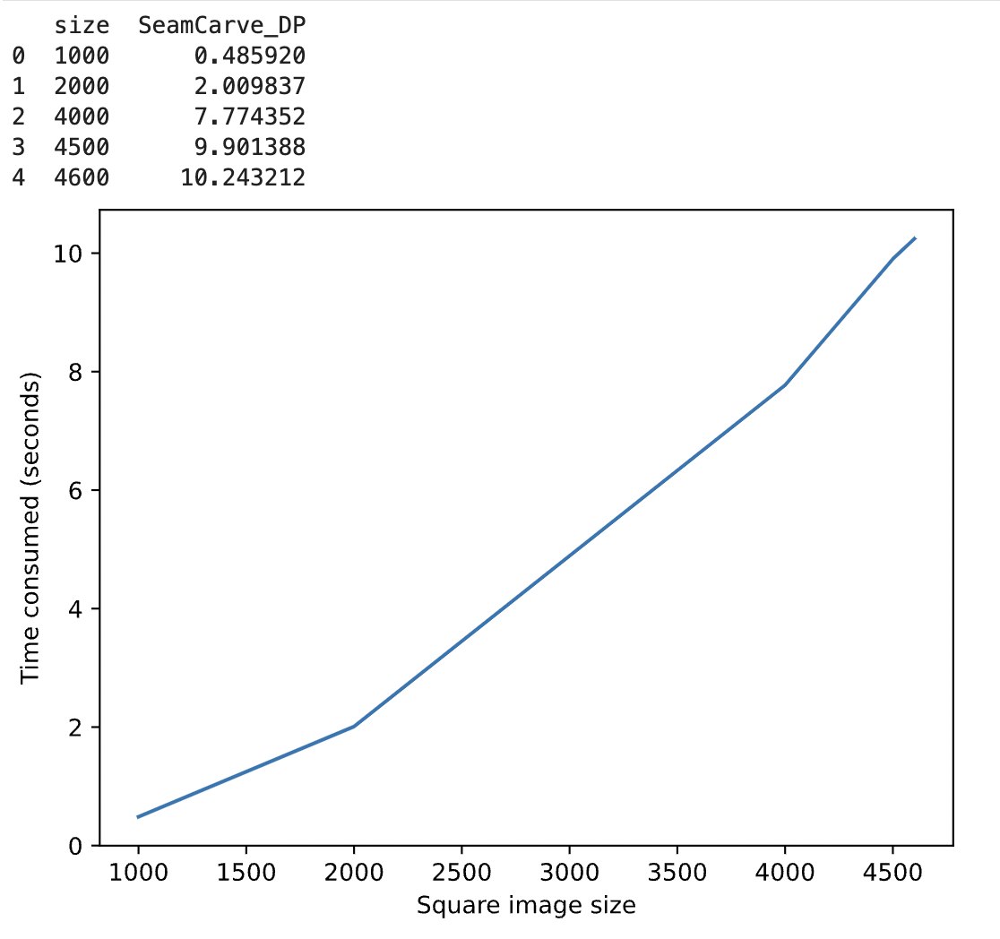
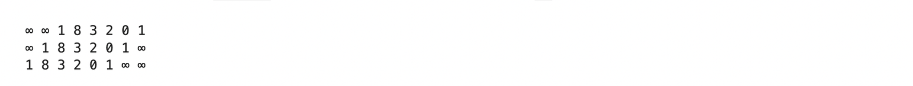
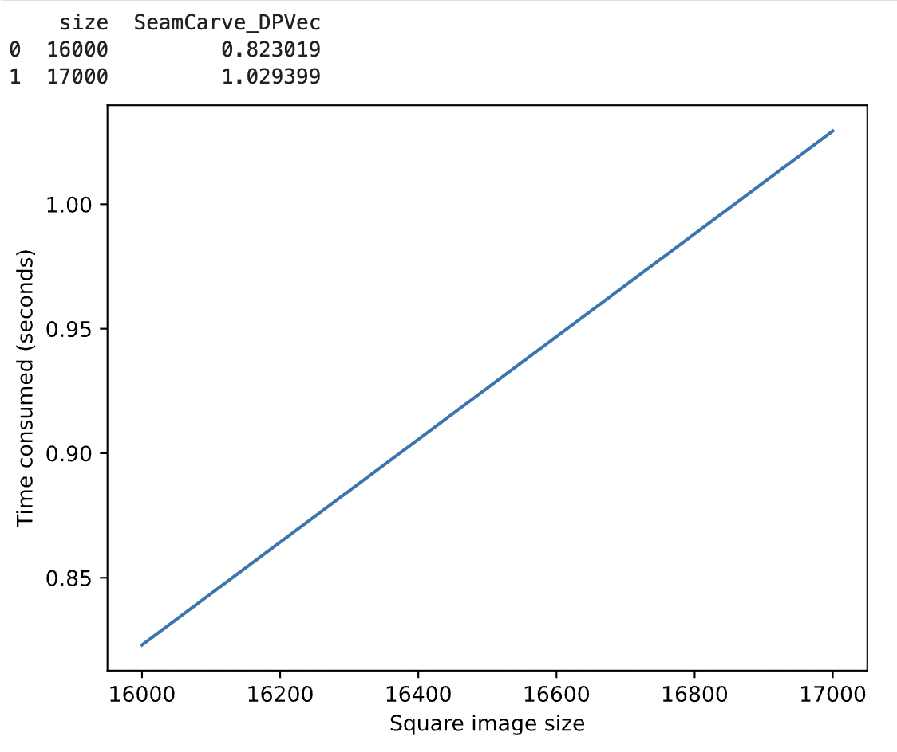
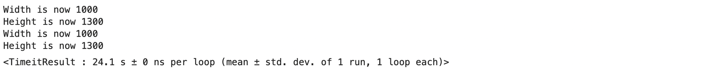
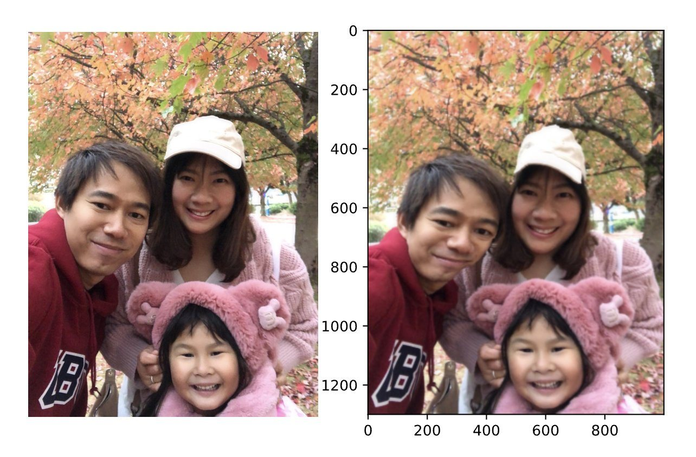

Seam Carving and Its Implementations
Seam Carving is one of the most versatile algorithm for image resizing, it finds the path of pixels on the picture having the lowest energy corresponding to the lowest information pixels that should be ignored, and it works well with uneven resizing dimension as well. Although, the implementation of the Seam Carving is quite in pain, it could takes the algorithm to run if we implement it with some inappropriate techniques. In this project, I will show you four different ways (Recursive Programming, Integer Linear Programming, Dynamic Programming, and Code Vectorization) to develop and implement the Seam Carving algorithm along with their performance comparison .

The Seam Carving Algorithm
Generally, when we need to adjust the dimensions of images, especially when adjusting images to various screen sizes or resolutions, a conventional approach to reduce image size involves discarding pixels, exemplified by simply halving both the width and height—achieved by dividing the image into 2×2 squares and retaining only the upper-left pixel in each square. However, challenges arise when we need to resize images in different sizes or resolutions such as 20% or with a specific width and height, the more sophisticated algorithm should be considered.
In 2007, Shai Avidan and Ariel Shamir introduced a paper, "Seam Carving for Content-Aware Image Resizing", provides an in-depth exploration of this technique. The seam carving algorithm is centered around "content-aware" image resizing, wherein the addition or removal of pixels is determined based on the image content itself. Unlike traditional resizing methods limited to specific fractions such as doubling or halving, seam carving allows resizing to any dimension. Please check this video for more detail information of this algorithm.
Seam carving operates by iteratively removing seams from an image. A seam refers to a connected path from the top to the bottom of the image for a vertical seam, or from the left to the right for a horizontal seam having the lowest total energy of pixels. Each seam comprises one pixel per row (for vertical seams) or one pixel per column (for horizontal seams). The image below illustrates a vertical and a horizontal seam, both highlighted in red.

When we describe a "connected" path, we mean that a connected vertical (horizontal) path is a sequence of pixels, with one pixel per row (column), ensuring that adjacent pixels in the sequence are at most one column (row) apart. Simply put, when creating a vertical seam by moving down the image, the movement is restricted to diagonal or straight-down directions; it is not permissible to move to a pixel that is farther away. The algorithm repetitively finds the lowest energy seam path and discard it until it reaches the desired size or resolution.
Seam Carving class
The seam carving class, SeamCarve(), below provides several function associated with the algorithm such as
seam_carve()
energy()
find_vertical_seam()
find_horizontal_seam()
remove_vertical_seam()
remove_horizontal_seam()
We will mainly work on the find_vertical_seam() function when we implement four types of algorithms.
class SeamCarve:
def energy(self, image):
"""
Computes the "energy" of an image.
Parameters
----------
image : numpy.ndarray
A colour image
Returns
-------
numpy.ndarray
A new image where the pixels values represent the energy
of the corresponding pixel in the original image
"""
dy = np.array([-1, 0, 1])[:, None, None]
dx = np.array([-1, 0, 1])[None, :, None]
energy_img = convolve(image, dx)**2 + convolve(image, dy)**2
return np.sum(energy_img, axis=2)
def find_vertical_seam(self, energy):
"""
Find the minimum-energy vertical seam in an image.
(We will implement 4 algorithms on this function)
Parameters
----------
energy : numpy.ndarray
the 2d energy image
Returns
-------
numpy.ndarray
an array containing all zeros
"""
return np.zeros(energy.shape[0])
def find_horizontal_seam(self, energy):
"""
Find the minimum-energy horizontal seam in an image.
Parameters
----------
energy : numpy.ndarray
a 2d numpy array containing the energy values. Size NxM
Returns
-------
numpy.ndarray
a seam represented as a 1d array of length M, with all values between 0 and N-1
"""
return self.find_vertical_seam(energy.T)
def remove_vertical_seam(self, image, seam):
"""
Remove a vertical seam from an image.
Parameters
----------
image : numpy.ndarray
a 3d numpy array containing the pixel values
seam : numpy.ndarray
a 1d array (or list) containing the column index of each pixel in the seam
length N, all values between 0 and M-1
Returns
-------
numpy.ndarray
a new image that is smaller by 1 column. Size N by M-1.
"""
height = image.shape[0]
linear_inds = np.array(seam)+np.arange(image.shape[0])*image.shape[1]
new_image = np.zeros(
(height, image.shape[1]-1, image.shape[-1]), dtype=image.dtype)
for c in range(image.shape[-1]):
temp = np.delete(image[:, :, c], linear_inds.astype(int))
temp = np.reshape(temp, (height, image.shape[1]-1))
new_image[:, :, c] = temp
return new_image
# Same as remove_vertical_seam above, but for a horizontal seam. The output image is size N-1 by M.
def remove_horizontal_seam(self, image, seam):
"""
Remove a horizontal seam from an image.
Parameters
----------
image : numpy.ndarray
a 2d numpy array containing the pixel values. Size NxM
seam : numpy.ndarray
a 1d array containing the column index of each pixel in the seam
length N, all values between 0 and M-1.
Returns
-------
numpy.ndarray
a new image that is smaller by 1 row. Size N-1 by M.
"""
return np.transpose(self.remove_vertical_seam(np.transpose(image, (1, 0, 2)), seam), (1, 0, 2))
def seam_carve(self, image, desired_height, desired_width, plot=False, verbose=True):
"""
Resize an NxM image to a desired height and width.
Note: this function only makes images smaller. Enlarging an image is not implemented.
Note: this function removes all vertical seams before removing any horizontal
seams, which may not be optimal.
Parameters
----------
image : numpy.ndarray
a 3d numpy array of size N x M x 3
desired_width : int
the desired width
desired_height : int
the desired height
plot : bool (default = False)
whether or not to plot the seams as you go along
verbose : bool (default = True)
whether or not to print output during the seam carving
Returns
-------
numpy array
the resized image, now of size desired_height x desired_width x 3
Example
-------
>>> sc = SeamCarve()
>>> image = np.array([[[0.2 , 0.1 , 0.6 ], [0.4 , 0.5 , 0.65]], [[0.3 , 0.7 , 0.3 ], [0.8 , 0.33, 0.7 ]]])
>>> sc.seam_carve(image, 1, 1 )
array([[[0.8 , 0.33, 0.7 ]]])
"""
while image.shape[1] > desired_width:
seam = self.find_vertical_seam(self.energy(image))
assert len(seam) == image.shape[0], "the length of the seam must equal the height of the image"
if plot:
plt.imshow(image)
plt.plot(seam, np.arange(image.shape[0]), linewidth=5);
plt.show()
image = self.remove_vertical_seam(image, seam)
if verbose:
print('\rWidth is now %d' % image.shape[1], end='')
if verbose:
print()
while image.shape[0] > desired_height:
seam = self.find_horizontal_seam(self.energy(image))
assert len(seam) == image.shape[1], "the length of the seam must equal the width of the image"
if plot:
plt.imshow(image)
plt.plot(np.arange(image.shape[1]), seam, linewidth=5);
plt.show()
image = self.remove_horizontal_seam(image, seam)
if verbose:
print('\rHeight is now %d' % image.shape[0], end='')
if verbose:
print()
if plot:
plt.imshow(image)
return image#1 Implement with Recursive Programming
One easy and intuitive way to implement the seam carving algorithm is to recursively calculate the seam path by checking the energy matrix from every pixel, this is a brute force solution that is expensive and slow. The code below shows the implementation by having the find_vertical_seam() that recursively calls the fvs() function to find and update the seam path.
class SeamCarveRecursive(SeamCarve):
def fvs(energy, seam, cost):
"""
The "inner" recursive function for finding a vertical seam.
Parameters
----------
energy : numpy.ndarray
the 2d energy image
seam : list
the partial seam (from the top, partway down the image)
cost : float
the cost of the partial seam
Returns
-------
tuple
contains the seam and the energy cost
Example
-------
>>> fvs(np.array([[0.6625, 0.3939], [1.0069, 0.7383]]), [1], 0.0)
([1, 1], 1.1321999999999999)
"""
row = len(seam)-1
col = seam[-1]
# if out of bounds on one of the two sides, return infinite energy
if col < 0 or col >= energy.shape[1]:
return seam, np.inf
cost += energy[row, col]
# regular base case: reached bottom of image
if len(seam) == energy.shape[0]:
return seam, cost
return min((fvs(energy, seam+[col], cost),
fvs(energy, seam+[col+1], cost),
fvs(energy, seam+[col-1], cost)), key=lambda x: x[1])
def find_vertical_seam(self, energy):
"""
Finds the vertical seam of lowest total energy inside the image.
Parameters
----------
energy : numpy.ndarray
the 2d energy image
Returns
-------
list
the seam of column indices
Example
-------
>>> sc_recursive = SeamCarveRecursive()
>>> e = np.array([[0.6625, 0.3939], [1.0069, 0.7383]])
>>> sc_recursive.find_vertical_seam(e)
(1, 1)
"""
costs = dict()
for i in range(energy.shape[1]):
best_seam, best_cost = fvs(energy, [i], 0.0)
costs[tuple(best_seam)] = best_cost
return min(costs, key=costs.get) # the best out of the M best seamsThe time complexity of this algorithm is O( (3^N) * M ) when N is the height and M is the width of the picture.
When testing the algorithm with a random noise image with varying the height, we found that the Recursive Seam Carving can only run to size=13 while working under 10 seconds which is pretty slow.
# Fix width = 5 and vary height
from collections import defaultdict
list_sizes = [1,2,3,4,5,6,7,8,9,10]
results = defaultdict(list)
results["height_size"] = list_sizes
scr_test = SeamCarveRecursive()
for list_size in list_sizes:
img1c2 = np.random.rand(list_size,5,3)
energy = scr_test.energy(img1c2)
time = %timeit -q -o -r 1 scr_test.find_vertical_seam(energy)
results["Time consumed"].append(time.average)
df = pd.DataFrame(results)
print(df)
plt.plot(df['height_size'], df['Time consumed'])
plt.xlabel('Height size')
plt.ylabel('Time consumed')
plt.show()
#2 Implement with Integer Linear Programming (ILP)
Another method to implement the algorithm is to apply the linear programming. In many case, if we know that our problem is linear, we can then construct the objective function, constraints, and formulate the linear optimization problem. The code below shows the implementation using PuLP package.
class SeamCarveILP(SeamCarve):
def find_vertical_seam(self, energy):
"""
Finds the vertical seam of lowest total energy inside the image.
Parameters
----------
energy : numpy.ndarray
the 2d energy image
Returns
-------
list
the seam of column indices
Example
-------
>>> sc = SeamCarveILP()
>>> e = np.array([[0.6625, 0.3939], [1.0069, 0.7383]])
sc.find_vertical_seam(e)
[1, 1]
"""
N, M = energy.shape
# initialize the optimization problem, give it a name
prob = pulp.LpProblem("Seam_carving", pulp.LpMinimize)
# create the x_ij variables
x = pulp.LpVariable.dicts("pixels",(list(range(N)),list(range(M))),0,1,pulp.LpInteger)
# The objective function is being built here. The objective is the sum of energies in the seam.
objective_terms = list()
for i in range(N):
for j in range(M):
objective_terms.append(x[i][j]*energy[i][j])
prob += pulp.lpSum(objective_terms) # adds up all the terms in the list
# Constraint #1: one pixel per row
# YOUR CODE HERE
for i in range(N):
prob += ( pulp.lpSum(x[i][j] for j in range(M)) == 1 )
# Constraint #2: connectivity of seam
for i in range(N-1):
for j in range(M): # below: this says: x(i,j) - x(i+1,j-1) - x(i+1,j) - x(i+1,j+1) <= 0
prob += pulp.lpSum([x[i][j]]+[-x[i+1][k] for k in range(max(0,j-1),min(M,j+2))]) <= 0
# Solve the problem
prob.solve(pulp.apis.PULP_CBC_CMD(msg=0))
# Build up the seam by collecting the pixels in the optimal seam
seam = []
for i in range(N):
for j in range(M):
if pulp.value( x[i][j]) == 1:
seam.append(j)
return seam
Testing the ILP Seam Carving algorithm with the same procedure, we found that the ILP can work through size=35 while working under 10 seconds.
#3 Implement with Dynamic Programming (DP)
In the first solution, we use a brute-force method of the recursive programming, while in the second solution, we tried to improve it by applying the linear optimization. However, if we deeply understand how our algorithm works, we may be able to come up with the way to make it more efficient.
In this seam carving algorithm, we know that a seam is a connection of the adjacent pixels nearby it, therefore, we can directly limit the number of calculation to these adjacent neighbors. This will tremendously reduce the calculation leading to the improvement in speed, and this is the main idea of the Dynamic Programming.
class SeamCarveDP(SeamCarve):
def find_vertical_seam(self, energy):
"""
The vertical seam of lowest total energy inside the image.
Parameters
----------
energy : numpy.ndarray
the 2d energy image
Returns
-------
list
the seam of column indices
Example
-------
>>> sc = SeamCarveDP()
>>> e = np.array([[0.6625, 0.3939], [1.0069, 0.7383]])
sc.find_vertical_seam(e)
[1, 1]
"""
nrows, ncols = energy.shape
# Cumulative Minimum Energy
CME = np.zeros((nrows, ncols+2))
CME[:,0] = np.inf
CME[:,-1] = np.inf
CME[:,1:-1] = energy
for i in range(1,nrows):
for j in range(1,ncols+1):
CME[i,j] += min(CME[i-1,j-1],CME[i-1,j],CME[i-1,j+1])
# create the seam array
seam = np.zeros(nrows, dtype=int)
seam[-1] = np.argmin(CME[-1,:])
# track the path backwards
for i in range(nrows-2,-1,-1):
delta = np.argmin(CME[i, seam[i+1]-1:seam[i+1]+2]) - 1
seam[i] = seam[i+1] + delta
return seam - 1 
After testing this Dynamic Programming Seam Carving algorithm, we found an interesting result that the algorithm could run to size of 4500 while running under 10 seconds which is greatly improved compared with the Recursive and Linear Programming method. The time complexity of this method is only O(N*M).
#4 Implement with Code Vectorization
All three methods above works by improving the algorithms, in the real world, we might not be able to come up with a new algorithm more often. On the other hands, implementation of the algorithm is an aspect that we need to focus.
For example, in the real world, to run this algorithm, we would prefer others faster programming languages such as C++ or Julia, but we sometimes do not have much choice. If we need to stick with Python, one thing we could do is that to check whether we have better version of code to use, and yes, we have the vectorized function such as Numpy that could help speeding up the code. In this case, we can apply shifting operation and np.min() to find the lowest energy path as below,

The code below implements the vectorized function using np.concatenate(), np.stack(), and np.min().
class SeamCarveDPVec(SeamCarve):
def find_vertical_seam(self, energy):
"""
The vertical seam of lowest total energy inside the image.
Parameters
----------
energy : numpy.ndarray
the 2d energy image
Returns
-------
list
the seam of column indices
Example
-------
>>> sc = SeamCarveDP()
>>> e = np.array([[0.6625, 0.3939], [1.0069, 0.7383]])
sc.find_vertical_seam(e)
[1, 1]
"""
nrows, ncols = energy.shape
# Cumulative Minimum Energy
CME = np.zeros((nrows, ncols+2))
CME[:,0] = np.inf
CME[:,-1] = np.inf
CME[:,1:-1] = energy
for i in range(1,nrows):
e = CME[i-1,1:-1]
z1 = np.concatenate(([np.inf,np.inf],e))
z2 = np.concatenate(([np.inf],e,[np.inf]))
z3 = np.concatenate((e,[np.inf,np.inf]))
Z = np.stack((z1,z2,z3))
Zmin = np.min(Z, axis=0)
Zmin[0] = np.inf
Zmin[-1] = np.inf
CME[i,:] += Zmin
# create the seam array
seam = np.zeros(nrows, dtype=int)
seam[-1] = np.argmin(CME[-1,:])
# track the path backwards
for i in range(nrows-2,-1,-1):
delta = np.argmin(CME[i, seam[i+1]-1:seam[i+1]+2]) - 1
seam[i] = seam[i+1] + delta
return seam - 1 
Testing the Vectorized Seam Carving, we can see that the algorithm could be able to run to the size of 16,000 before reaching a second. This implies that the algorithm could be able to run to the size of 160,000 when running by 10 seconds (We could not perform this by the memory limitation). Therefore, this is the best efficient version of the Seam Carving we have!!!
Choosing the right algorithm
As we can see that each implementation takes different time running the algorithm and this can vary a lot. For example, with N=35 that took 5.64 seconds to run with ILP method, it would take 3^(35-13) (35/13) 3.89 which is about 10,421 years to run with the Recursive method. Or with N=160,000 that took 8.2 seconds to run with the Vectorized method, it would take (160,000/ 4,500) * 9.9 = 352 seconds to run with the Dynamic Programming. Therefore, choosing the right algorithm for our code is significantly important.
Test with the real image
Another task to do is to test the algorithm with the real picture, therefore, I read my family image having an original size of (1476, 1110, 3) and we will resize the image to 1300x1000, record the time, and compare the result.
img_fam = plt.imread("fam.jpg")
img_fam.shapescdpv = SeamCarveDPVec()
%timeit -q -o -r 1 scdpv.seam_carve(img_fam, 1300, 1000)
img_rsz = scdpv.seam_carve(img_fam, 1300, 1000)
plt.imshow(img_rsz);
Based on the test, the Vectorized Seam Carving used on 24.1 seconds to reduce 300 pixels on vertical and horizontal while the resized image looks good as it keeps the main faces of people and discards some unimportant information such as the background behind.
Summary
Seam Carving is a popular and useful for image resizing especially when the size or resolution of the new image is not equal.
Implementation of the seam carving algorithm by different methods causes difference in the speed of the algorithm. The Recursive Programming is the slowest implementation, follow by the Integer Linear Programming, the Dynamic Programming, and finally, the Code Vectorization which is the fastest implementation.
Not only thinking about the algorithm, the way to implement the algorithm is important as well as we saw the speed of the Code Vectorized code.
Using wrong algorithm can cause to a very poor performance of the code. For example, using wrong algorithm will take years to run while choosing the right algorithm will take only minutes to run as we saw in the comparison of these four methods. Therefore, if you need to run the code intensively, think about the right algorithm!!!